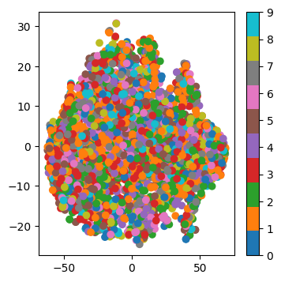

import numpy as np
from sklearn.datasets import load_digits
from matplotlib import pyplot as plt
digits = load_digits()
X = digits.data
y = digits.target
print(f"La taille des données est {X.shape} et celle des labels est {y.shape}")
print(f"La première image ressemble à:")
plt.figure(figsize=(3, 3))
plt.imshow(X[0].reshape(8, 8), cmap="Greys")
plt.axis("off")
plt.title(f"Le label de cette image est {y[0]}")
plt.show()INSEA Techniques de réduction de dimension - 2025
TP 4: PCA and non-linear visualization methods
Lundi 14 Décembre 2025 Author: Hicham Janati
Part 1
The following code reads a subset of image data of handwritten digits. The data matrix X contains the images: each row is an 8x8 image. The vector y contains the true digit for each image. In ML, we call y the labels/targets (or “étiquettes” en français).
Question 1
Visualize the first 8 images of the dataset in a single figure, with their true label shown as the title for each image.
Question 2
Prepare the data to perform a principal component analysis and compute the covariance matrix.
Question 3
Determine the principal axes and their variances, then visualize the 2-dimensional projection using a plt.scatter, including the percentage of variance explained by each principal axis. What can you conclude from this?
Question 4
In the 2D projection figure, color each point according to its true label to see whether PCA made it possible to separate the digits into separate clusters. Check the arguments of plt.scatter by running plt.scatter?:
plt.scatter?Question 5
Visualize the scree plot (the curve of the cumulative percentage of explained variance as a function of the principal component index, in decreasing order of importance) for this PCA. What do you think about it?
Part 2: Non-linear methods
MDS, Isomap and TSNE are implemented in scikit-learn’s manifold module:
from sklearn.manifold import Isomap, TSNE, MDS, ClassicalMDS
from sklearn.decomposition import PCAYou can use the following to run MDS for example:
mds = ClassicalMDS(n_components=2)
X_mds = mds.fit_transform(X)
print(X_mds.shape)Question 6:
Compare the PCA projections with classical MDS both visually and computationally. Are they equivalent ?
Question 7:
Now using MDS (metric) MDS, is the visualization similar ? Compare with PCA and Classical MDS.
Question 8:
Run isomap and play around with its main arguments (n_neighbors). Check the Isomap Documentation.
Question 9:
Run TSNE and play around with perplexity. Check the TSNE documentation
Question 10:
Install umap (pip install umap-learn) and run it on the same dataset. The package follows the same API (logic) of scikit-learn with .fit_transform
from umap import UMAP
u = UMAP(n_components=2)
# to do Part 3: SVHN dataset
Now we move on to a more complex dataset: the SVHN (Street view house numbers). You can download it here:
import os, requests
import numpy as np
url = "https://www.dropbox.com/scl/fi/5u0s8hdv7wyzh8rhndi2o/small_svhn.npz?rlkey=l0zsmchiymz8qmdjb16koijqa&dl=1"
local_path = "small_svhn.npz"
if not os.path.exists(local_path):
print("Downloading small_svhn.npz...")
with requests.get(url, stream=True) as r:
r.raise_for_status()
with open(local_path, "wb") as f:
for chunk in r.iter_content(chunk_size=8192):
if chunk:
f.write(chunk)
else:
print("Using cached small_svhn.npz")
data = np.load(local_path)
X = np.load("small_svhn.npz")["X"]
y = np.load("small_svhn.npz")["y"]
print(f"The shape of the dataset is {X.shape}")
print(f"The first labels are {y[:10]}")Using cached small_svhn.npz
The shape of the dataset is (3662, 32, 32)
The first labels are [1 1 0 2 6 4 2 5 9 0]Question 11:
Visualize the first images and their labels. What do you notice ?
Question 12:
Apply PCA, t-SNE and UMAP on this data. Was the result expected ?
Challenge
Les images SVHN ont une très grande variabilité ce qui rend la séparation des clusters difficile. Le défi est de chercher (une ou des transformations) à appliquer à ces images afin d’extraire des “features” qui simplifient la tâche de t-SNE. Par exemple, on peut jouer sur le contraste, les filtres, la taille des images etc. On note la transformation appliquée à ces images par \(\phi\): \[ \phi: \quad image \in \mathbb R^{32 \times 32} \mapsto \phi(image) \in \mathbb R^{k} \]
à vous de définir la transformation \(\phi\) adéquate telle que t-SNE appliquée sur \(\phi(images)\) distingue au mieux les clusters. Pour définir la transformation \(\phi\) vous pouvez utiliser n’importe quelle librairie Python à condition de respecter les règles suivantes: - \(\phi\) ne dépend que des images \(X\) et n’utilise pas les labels \(y\) - Comprendre exactement ce que fait la fonction \(\phi\)
Pour vous expliquer l’évaluation de votre rendu, on commence avec une fonction \(\phi\) naive qui ne fait que reshape chaque image 32 x 32 en un vecteur de taille 1024. On utilise la fonction transform_images qui calcule \(phi(x_i)\) pour chaque image \(x_i\) et renvoie le dataset transformé en dimension \(k\):
def phi(image):
# TODO: define the transformation $\phi$
return image.flatten()
def transform_images(X):
out = []
for image in X:
phi_x = phi(image)
out.append(phi_x)
return np.array(out)
Vous serez évalués sur le temps pris par la transformation également:
from time import time
t0 = time()
X_transformed = transform_images(X)
t1 = time()
print(f"Temps pris pour la transformation du dataset: {t1 - t0}s | Nouvelle dimension des données: {X_transformed.shape}")Temps pris pour la transformation du dataset: 0.022612810134887695s | Nouvelle dimension des données: (3662, 1024)On applique t_SNE sur ces données transformées. Afin de garder la reproducibilité du code et de pouvoir comparer avec les autres soumissions de façon équitable, ne changez pas le random_state=42:
from sklearn.manifold import TSNE
from matplotlib import pyplot as plt
tsne = TSNE(n_components=2, random_state=42)
X_tsne = tsne.fit_transform(X_transformed)
plt.figure(figsize=(4, 4))
plt.scatter(X_tsne[:, 0], X_tsne[:, 1], c=y, cmap="tab10")
plt.colorbar()
plt.show()
Pour évaluer la qualité des clusters, on évalue simplement la performance d’un k-NN sur la représentation t-SNE. En pratique, on ne fait jamais ça, ceci est un simple critère mesurable afin de comparer vos méthodes. Éxécutez mais Ne changez pas le code suivant:
from sklearn.model_selection import train_test_split
from sklearn.neighbors import KNeighborsClassifier
X_train, X_test, y_train, y_test = train_test_split(X_tsne, y, test_size=0.2, random_state=42, stratify=y)
knn = KNeighborsClassifier(n_neighbors=5)
knn.fit(X_train, y_train)
score = knn.score(X_test, y_test)
print(f"Score du k-NN: {score}")Score du k-NN: 0.29740791268758526